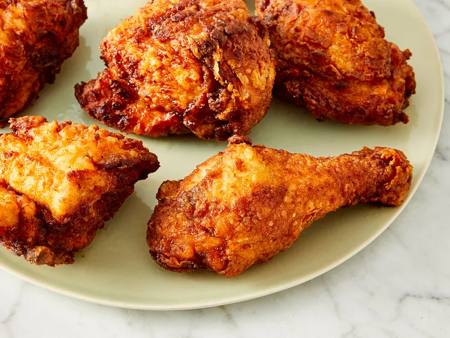

Fried chicken

Story of the Fried chicken
Fried chicken, beloved by many, has its roots in the US South. Although its origins remain somewhat mysterious, it may have surprising ties to Scotland. Until World War Two, fried chicken was reserved for special occasions, but now it’s enjoyed anytime. Its versatility allows for countless variations in marinating, seasoning, coating, and frying. Whether you call it Gospel bird or simply crave its crispy goodness, fried chicken remains a global favorite
Ingredients
- 1 (4 pound) chicken, cut into pieces
- 1 cup buttermilk
- 2 cups all-purpose flour for coating
- 1 teaspoon paprika
- salt and pepper to taste
- 2 quarts vegetable oil for frying
Preparation steps
- Take your cut up chicken pieces and skin them if you prefer.
- Put the flour in a large plastic bag (let the amount of chicken you are cooking dictate the amount of flour you use). Season the flour with paprika, salt and pepper to taste (paprika helps to brown the chicken).
- Dip chicken pieces in buttermilk then, a few at a time, put them in the bag with the flour, seal the bag and shake to coat well.
- Place the coated chicken on a cookie sheet or tray, and cover with a clean dish towel or waxed paper. LET SIT UNTIL THE FLOUR IS OF A PASTE-LIKE CONSISTENCY. THIS IS CRUCIAL!
- Fill a large skillet (cast iron is best) about 1/3 to 1/2 full with vegetable oil. Heat until VERY hot.
- Put in as many chicken pieces as the skillet can hold. Brown the chicken in HOT oil on both sides.
- When browned, reduce heat and cover skillet; let cook for 30 minutes (the chicken will be cooked through but not crispy). Remove cover, raise heat again, and continue to fry until crispy.
- Drain the fried chicken on paper towels. Depending on how much chicken you have, you may have to fry in a few shifts. Keep the finished chicken in a slightly warm oven while preparing the rest.